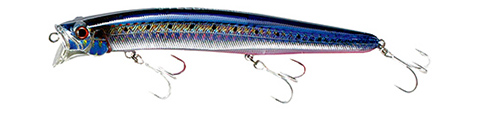
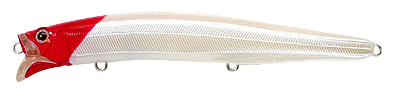
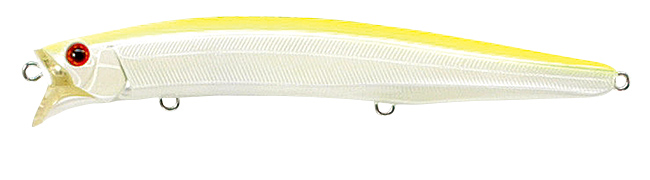
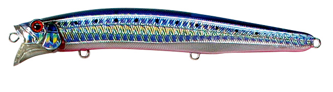
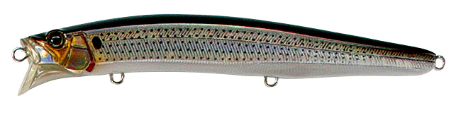

フィードシャロー128F
（シャローミノー）
フィードシャロー128F（CONTACT FEED. SHALLOW 128F）はTACKLE HOUSE（タックルハウス）のシャローミノーです。
フィードシャローのオリジナルモデルで、デビューから20年近く経った今も多くのシーバスアングラーに支持され続ける定番。艶かしい泳ぎのナチュラルヘッドロールで、「シーバスを狙うなら、まずはこの一本から」と言われる1本です。

画像出典:タックルハウス公式HP
スペック
- メーカー
- TACKLE HOUSE（タックルハウス）
- タイプ
- フローティング（シャローミノー）
- 全長
- 128mm
- 自重
- 18.5g
- 最大潜行深度
- 30cm
- フック
- ST-46 #5
- リング
- #3
- ターゲット
- シーバス
- 価格
- 2,450円（メーカー表記）
▼今すぐチェック
フィードシャロー128Fの特徴
20年近く愛されるナチュラルヘッドロールと、K-TENシステムの飛距離を持つシャローミノーの定番
-
ローリングメインの「ナチュラルヘッドロール」
アクションはローリングをメインとする、これまでのシャローミノーとは一線を画すナチュラルヘッドロール。ターゲットに違和感を与えない水平姿勢で泳ぐ。
-
平面に近いボディサイドで強いフラッシング
ボディサイドは限りなく平面に近く、メリハリの効いたフラッシング効果で大きくアピールする。ナチュラルな泳ぎとアピールを両立している。
-
磁着タングステンのK-TENシステムで圧倒的な飛距離
磁着タングステンを装着したK-TENシステムで、圧倒的な飛距離を発揮。水面直下5〜40cmをステージに、サーフ・干潟・河口・小磯とフィールドを問わず活躍する。
フィードシャロー128Fの使い方
基本はただ巻き。水平姿勢のナチュラルヘッドロールを活かし、スロー〜ミディアムで水面直下を通してくる。
広いシャローでは、飛距離を活かして扇状に投げ分けて探るのが基本。流れのある河口では、流れに乗せながらゆっくり巻いて、ナチュラルにベイトが流されるイメージで通します。
フィードシャロー128Fの得意な状況
サーフ・干潟・河口・小磯など、シャローエリア全般でシーバスを探したい状況が最大の出番。
フィールドを選ばず使えるので、初めての場所でまず投げる基準の1本として選びたいルアーです。
ワンポイント
強風や高波、強い流れで安定感が欲しい時は、128Fに2.5gウエイトをプラスしたチューニングモデル「フィードシャロー128PLUS」（21g）に持ち替えると扱いやすくなります。
小場所や港湾部では、ダウンサイジングした105Fも使いやすい選択肢です。
フィードシャローシリーズの使い分け
| モデル | 全長／自重 | 得意な場面 |
|---|---|---|
| 105F | 105mm／16g | 小場所・港湾域向けのダウンサイジングモデル |
| 128F | 128mm／18.5g | シリーズのオリジナルモデル・まずはこの一本（本記事のモデル） |
| 128PLUS | 128mm／21g | +2.5gのチューニングモデル・強風や高波、強い流れに |
| 155F | 155mm／28g | コノシロや落ち鮎など大きなベイトパターン |
| 155PLUS | 155mm／31g | 155Fに+3gのチューニングモデル |
フィードシャローは105F・128F・155Fに加え、ウエイトをプラスした「PLUS」モデルも展開。ベイトサイズと風・波・流れの強さで選ぶのが基本だ。
オススメカラー
フィードシャロー128Fは豊富なカラーを展開。オススメのカラーを厳選して紹介します。

01. パール・レッドヘッド定番のレッドヘッド。ナイトゲームや状況が読めない時の1本目に。

02. パールチャートシルエットを出しつつぼかすパールチャート。濁りやナイトゲームに。

10. HG・イワシ・レッドベリーイワシパターンにマッチするホロ系。デイゲームのナチュラルなアピールに。

11. HG・コノシロコノシロパターンに合わせたホロ系。大きめのベイトが入っている時に。
画像出典:タックルハウス公式HP
フィードシャロー128Fに似ているルアー
-
 ハーデス127F
バスデイ
詳細はこちら＞
ハーデス127F
バスデイ
詳細はこちら＞
127mmのリップレスシャローミノー。MAX70mの飛距離で、フィードシャロー128Fより遠くのシャローを探りたい時の選択肢になる。
-
 カゲロウ124F
メガバス
詳細はこちら＞
カゲロウ124F
メガバス
詳細はこちら＞
124mmのシャローランナーの定番。表層を広く探る役割が重なり、揺らぎのアクションで変化をつけたい時に使い分けたい。
-
 コモモSF-125
アイマ
詳細はこちら＞
コモモSF-125
アイマ
詳細はこちら＞
シャローランナーの先駆けとなった名作。長く愛される定番同士で、超低速でじっくり見せたい時はコモモと使い分けられる。